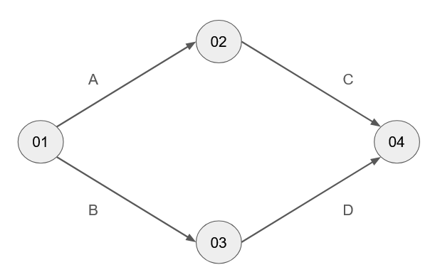

Esta é uma rede PERT comum:

Os eventos foram numerados de 1 a 4: as atividades foram designadas de A a D. Os eventos são representados por números e as atividades por letras.
O evento número 4 não pode ter lugar até que ambas as atividades C e D anteriores ao evento tenham sido completadas.
A atividade C não pode ser concluída até que o evento 2 se tenha verificado.
A atividade D não pode ser concluída até que o evento 3 se tenha verificado.
Cada atividade está entre dois eventos. No caso da atividade B o Evento 1 é a atividade inicial e o evento 3 a atividade conclusiva. Uma atividade não pode ser concluída até que seu evento inicial se tenha verificado. Um evento não pode ser considerado acontecido até que todas as atividades a ele dirigidas tenham sido concluídas.
Vire para a página 37.